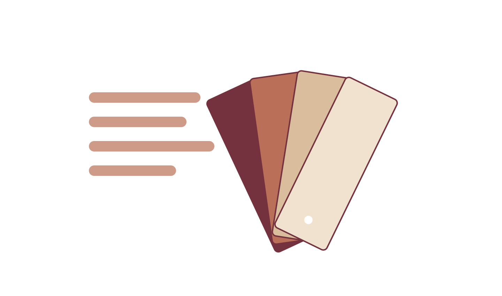
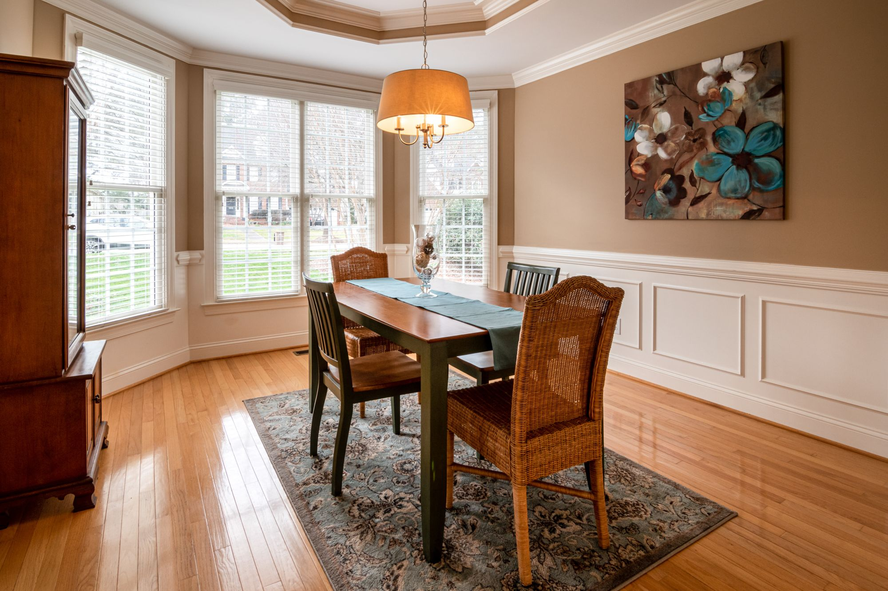
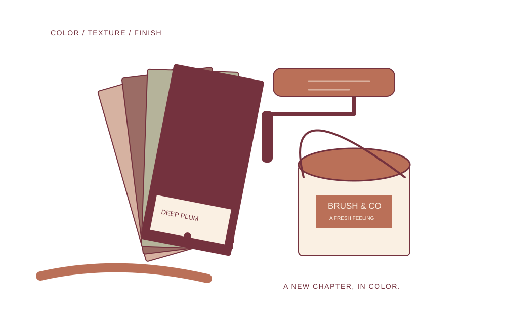
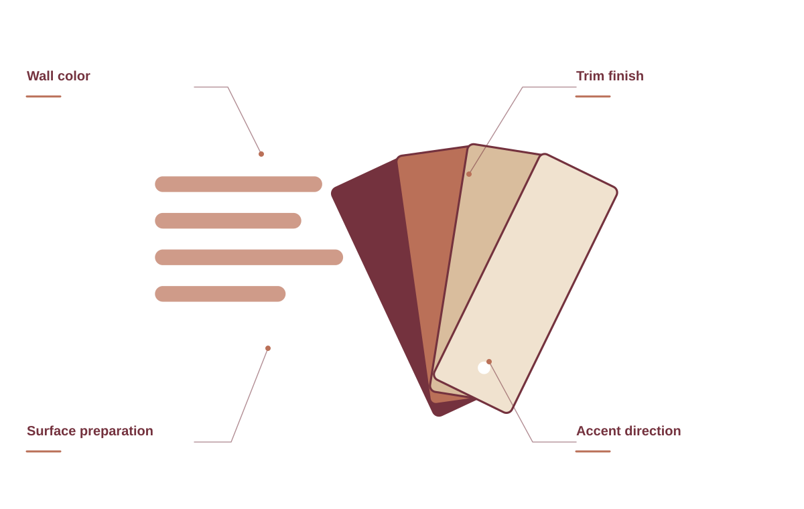
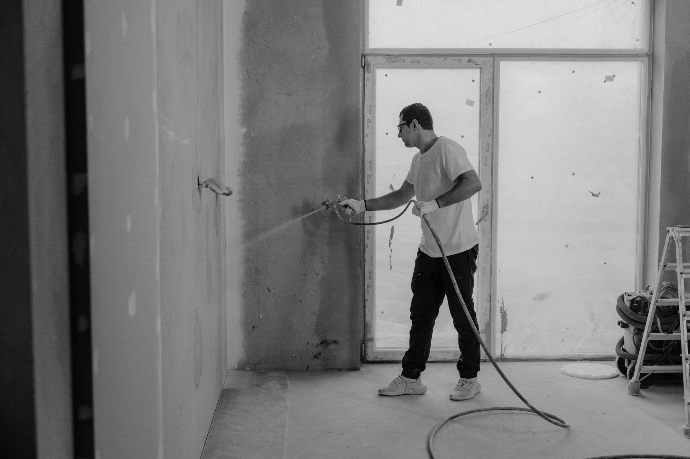
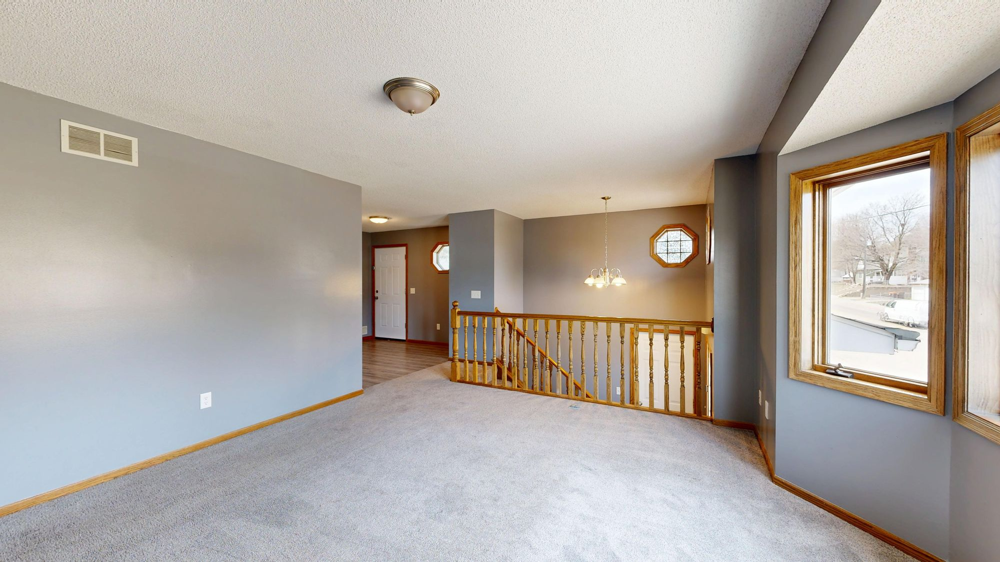
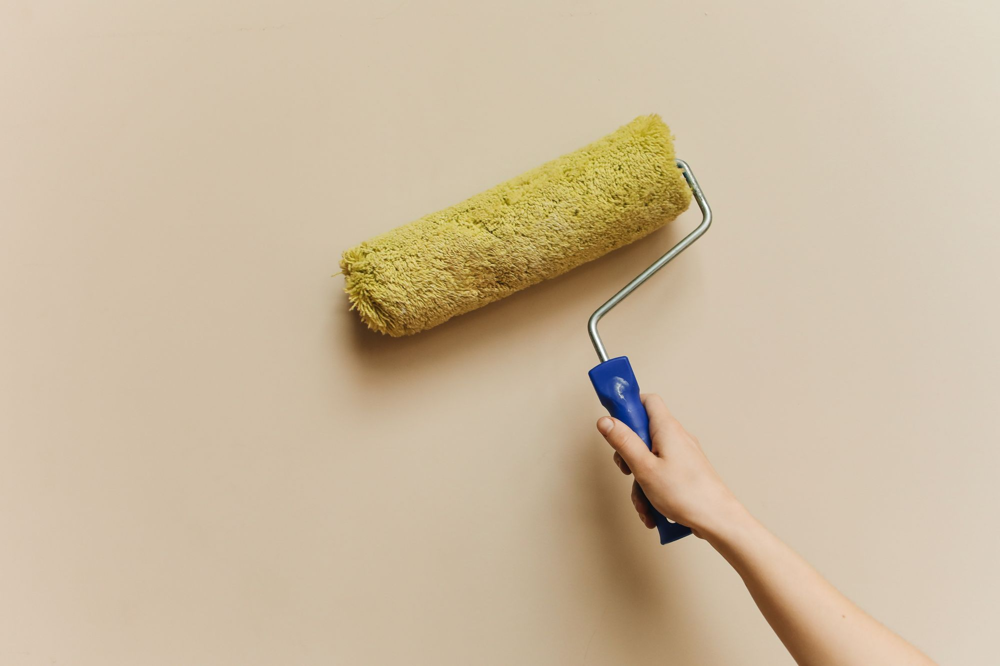
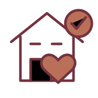

Interior painting
Set a new tone in the rooms you spend the most time in.
YOUR NEXT CHAPTER
Considered painting for rooms that feel a little more like you.
Let’s talk color ↗

Set a new tone in the rooms you spend the most time in.
YOUR NEXT CHAPTERGive the outside a finish that feels like your home.
YOUR NEXT CHAPTERA more considered finish for the details around you.
YOUR NEXT CHAPTERTalk through tones, finishes, and how the light changes your space.
YOUR NEXT CHAPTERA beautiful paint project begins before the first coat. Rooms, surfaces, light, color, and the way you live in the space should all guide the plan.

BRUSH & CO. / THE DETAILS MATTERTalk through the rooms, the light, and the atmosphere you want to create. Samples help make the conversation concrete.
Review the existing finish and the areas that need attention so preparation is part of the agreed scope.
Trim, doors, edges, and hardware all contribute to the way the room feels when it comes together.

Beautiful paintwork starts before the first coat. From surface preparation to the way we protect your rooms, we bring care to the details you’ll live with every day.


Morning light.
Evening light.
The feeling in between.
Tell us what you want to change and how it should feel.
Samples, surfaces, preparation, and the right scope.

Choose your finish and understand the work involved.
When you get in touch, a little context goes a long way. These are the details that help us start a useful conversation about your painting project.
Tell us what you have in mind ↗Tell us about rooms and surfaces so the conversation starts with your situation.
A few details about color direction help us understand what you need.
Share existing condition when you get in touch, including photos where useful.
Let us know about the details that matter so the proposed scope reflects your priorities.
Yes. We can discuss the room, surface, light, and practical needs before you choose a paint finish.
We’ll agree on room preparation in advance, including furniture, wall hangings, and access.
Tell us about the space and the change you have in mind. We can prepare a scope around your project.